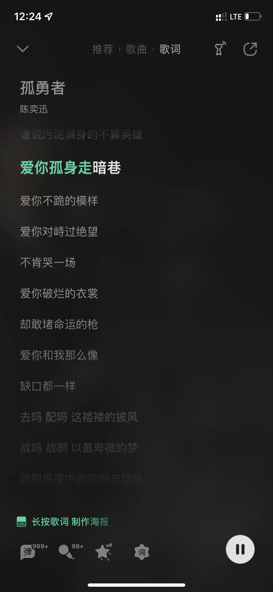

01/21/2022 Post 7
感觉进入大学之后的自己变得很迷茫，感觉不认识这个世界了。以前高中的时候的快乐很纯粹，很容易得到。每天和大家一起上课，一起聊天， 一起干饭（辣椒炒肉干拌粉yyds），觉得今后每一天要是也能这样就好了；暑假去上海玩一次都能让我兴奋得好几宿睡不着觉。不知是从几时起，也许是在高中毕业， 大学开始，成年这些事接踵而来之后吧，感觉一切都变了，感觉一切的一切都从彩色变得暗淡无光。大学和小学初中高中相比太不同了，没有人早上 来收手机，没有老师来督促学习，甚至没有人关心我有没有上课，有没有做作业。当然，比高中自由多了，但是自由的背后，意味着一直被老师管着还不时埋怨老师 的我必须要自己管住自己了；课程难度也大了亿点点，每次上课写作业就是围着冗长复杂的数学证明和计算机代码研究，有段时间看着induction就恶心，看到电脑连打游戏 的兴趣也没有了；对我而言最难以接受的应该还是社交。以前高中连着3年每天十多个小时更同一拨人呆在一起自然容易社交，但是进了大学嘛，完全走班制加上这个网课意味着 一点交流的机会都没有，曾经高中朝夕相处的“同学”变成了大学里字面上的的“课友”。到如今，我已经不记得有多少次一个人上课，一个人赶due，一个人吃饭，一个人逛超市... 甚至一个人坐飞机出国，一个人搬家。因为突然的孤单和压力我焦虑过，我崩溃过，甚至嚎啕大哭过，觉得这样的生活真没意思。但也许这就是成年人的世界吧，焦虑崩溃痛哭统统没有用， 只会浪费时间和精力。唯一的出路就是自己去适应这个陌生的全新的环境，去“逗自己开心”。我开始去寻找自己的兴趣，去看漫展，去摄影，去学着做饭，去看书，去散步，去学日语... 现在的我，虽然学习压力仍然很重，虽然对前途仍然有很多疑问，但至少，我想我不会放弃生活了。有人一起聊天打游戏固然是好的，但是一个人孤单的时候也必须给自己找乐子。 想想当时高中的时候花一千块报个日语课外班结果因为自己懒得上课就打水漂了，当时的我肯定想不到如今的我会为了抢日语课的最后一个位置和老师发两个星期的邮件据理力争。平时想 到刚进大学的那段痛苦的回忆就感觉很压抑，但是写完这段话之后，我想也许如果没有那些挫折的话我也不可能有现在这样坚强吧。纵使生活中99%都是糟心事，也必须要看到那1%的快乐， 单单是为了不让自己丧失改变生活的斗志。也许这就是人生吧。愿每一个处于低谷的人都能坚守那一份“孤勇”。
01/20/2022 Post 6
Guess what? I am back!!!
01/28/2021 Post 5
Just applied to Explore Microsoft program... I know that it is very late to apply now, but I have to wait for my final grade of the first semester. Hope that they still have an interview position for me.
09/09/2020 Post 4
So is this the college life??? Overwhelmed by the deadlines...

08/30/2020 Post 3
Only one week away from school...and with such uncertainty this year, I guess life is about to get hard...
08/14/2020 Post 2
I am going to the University of Waterloo to study Compsci in September! Here is what it looks like!


08/14/2020 Post 1
Hello World! Congradulate myself for my first self-made website!